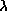

このプログラムは、両プレーヤを自らが受け持つことによって 一人学習を行う。また人間と対戦することもでき、この際にも学習を行う。 学習した知識（Q値）は、プログラム終了時にファイルに セーブすることができ、次回プログラム起動時に利用できる。
プログラムは局面（盤面）を内部表現として持っており、その局面と 唯一に対応する状態をキーにして Q値のテーブルを引き、 より報酬の期待値の高い手を選択してそれを実行する。 ここで言う状態には自分の手番が回ってきたときの局面のみが含まれ、 相手の手番である局面（自分が手を指した直後の局面）は含まれない。 すなわち自分の手を決定しても状態の遷移は非決定的となる。 よって学習アルゴリズムとして TD(

) ではなく Q-learning を用いる。勝ち負けの判断基準などは一切与えず、全て自ら獲得させるものとする。 但し状態数の爆発を防ぐため、対称な局面の同値判定だけは できるものとする。
プログラムには、試合に勝ったときは正、敗けたときは
負の報酬 が
与えられ、得られる報酬がより高くなるように Q値を更新して行く。
が
与えられ、得られる報酬がより高くなるように Q値を更新して行く。